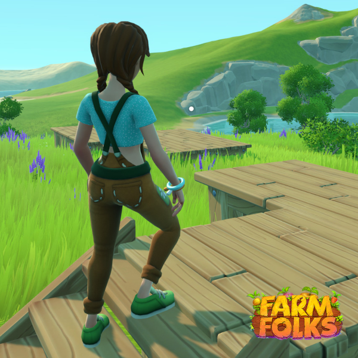
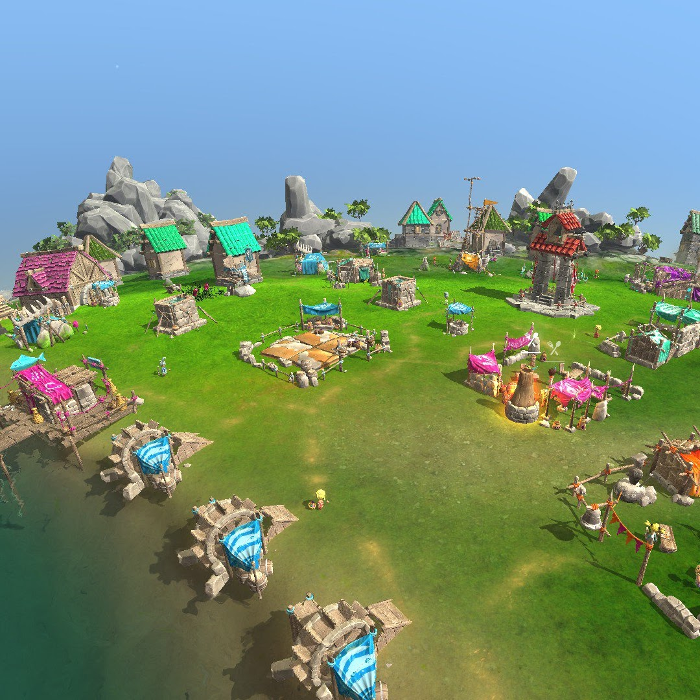
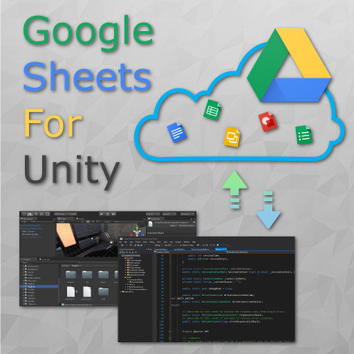
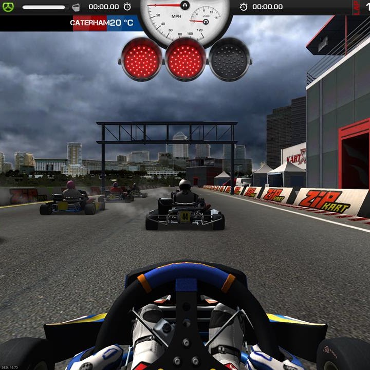
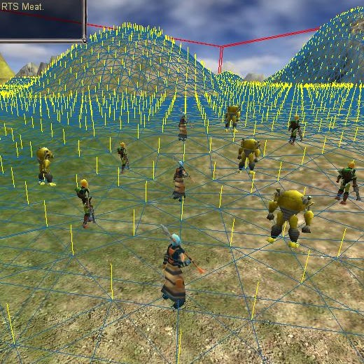

Farm Folks
Crytivo
Gameplay, integrations, and tools. A thoughtful approach to making games, built on curiosity, discipline, and simple code.
Explore the work
Crytivo

Crytivo

Cyberian Software
Explore on itch.io ↗
Fat Cigar Productions

GarageGames
“Constancy, inquiry, practice, discipline.”
These principles sit at the heart of Cyberian Software. Creativity is a companion to methodical work. Communication flourishes when it has order and structure. Responsibility gives ideas room to grow.
In life and in game development, the pursuit of something meaningful begins with a firm footing on Earth.
I'm a professional game developer from Argentina, with experience working remotely with studios and distributed teams across Canada, the United States, the United Kingdom, Switzerland, France, and Australia.
My work is that of a generalist: gameplay, integrations, and tools for desktop, mobile, and web projects. Unity and C# are central to my practice, alongside experience with JavaScript, .NET, databases, REST APIs, and Google Apps Script.
I like to keep code simple—as a teamwork skill, and as a personal preference.
Find me on GitHub